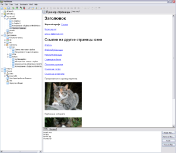

Одним из типов страниц, поддерживаемый OutWiker'ом являются страницы, содержащие HTML-код. Так как используемый в данный момент рендер HTML, очень прост, топоддержка HTML-тегов довольно ограничена и нет поддержки CSS и JavaScript.
В настоящий момент поддерживаются следующие теги:
A,
ADDRESS
AREA
B
BIG
BLOCKQUOTE
BODY
BR
CENTER
CITE
CODE
DD
DIV с атрибутом ALIGN
DL
DT
EM
FONT с атрибутами COLOR, SIZE, FACE
HR с атрибутами ALIGN, SIZE, WIDTH, NOSHADE
H1
H2
H3
H4
H5
H6
I
IMG
KBD
LI
MAP
META
OL
P
PRE
SAMP
SMALL
STRIKE
STRONG
SUB
SUP
TITLE
TABLE с атрибутами ALIGN, WIDTH, BORDER, VALIGN, BGCOLOR, CELLSPACING, CELLPADDING
TD с атрибутами ALIGN, VALIGN, BGCOLOR, WIDTH, COLSPAN, ROWSPAN, NOWRAP
TH с атрибутами ALIGN, VALIGN, BGCOLOR, WIDTH, COLSPAN, ROWSPAN
TR с атрибутами ALIGN, VALIGN, BGCOLOR
TT
U
UL
В отличие от обычного HTML-кода, OutWiker учитывает перевод строк. Так, одиночный перевод строки заменяется на тег <BR>, а двойной перевод строки заменяется на <P>
На панель инструментов HTML-страницы вынесены кнопки для добавления некоторых наиболее часто используемых тегов.
На странице возможны ссылки на прикрепленные файлы. Примеры смотрите ниже.
Скриншоты примера страниц:
|  |
{kind=link}